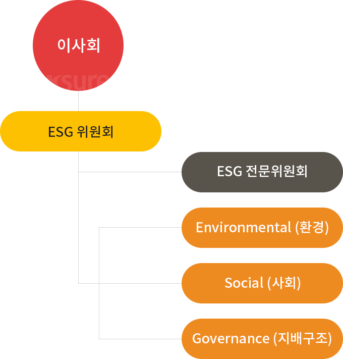
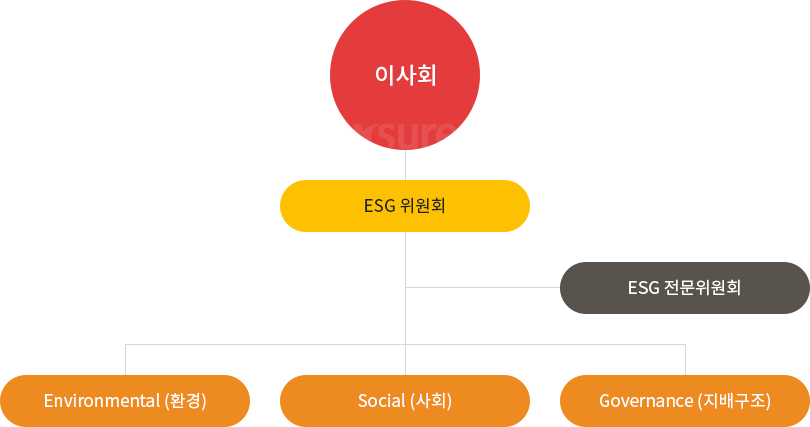

ESG 추진 전략
ESG 조직 체계
K-SURE는 ESG 업무를 총괄하는
조직 체계를 구축하기 위해
ESG 위원회를 신설하였습니다.
조직 체계를 구축하기 위해
ESG 위원회를 신설하였습니다.
ESG 위원회는 ESG 추진 전략을 수립하고 성과를 점검하여 이를 이사회에 보고 합니다. 아울러 외부 전문가로 구성된 ESG 전문위원회를 신설하여 이슈별 전문성을 제고하였으며, 사회적가치혁신실이 실무를 총괄하여 ESG 추진 체계가 전사적으로 실행되도록 관리합니다.
K-SURE는 체계적인 ESG 추진 조직을 구축하여 실효성 높은 ESG 전략과 활동을 추진하기 위해 노력하고 있습니다.


- 이사회
- ESG 위원회
- ESG 전문위원회
-
사회적가치혁신실
- Environmental(환경)
- Social(사회)
- Governance(지배구조)